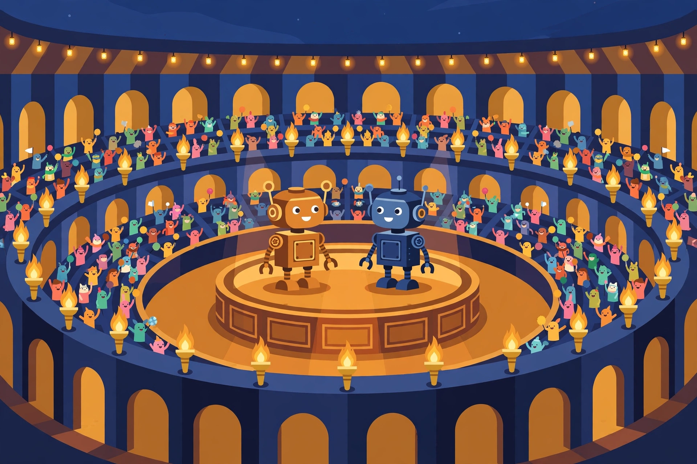
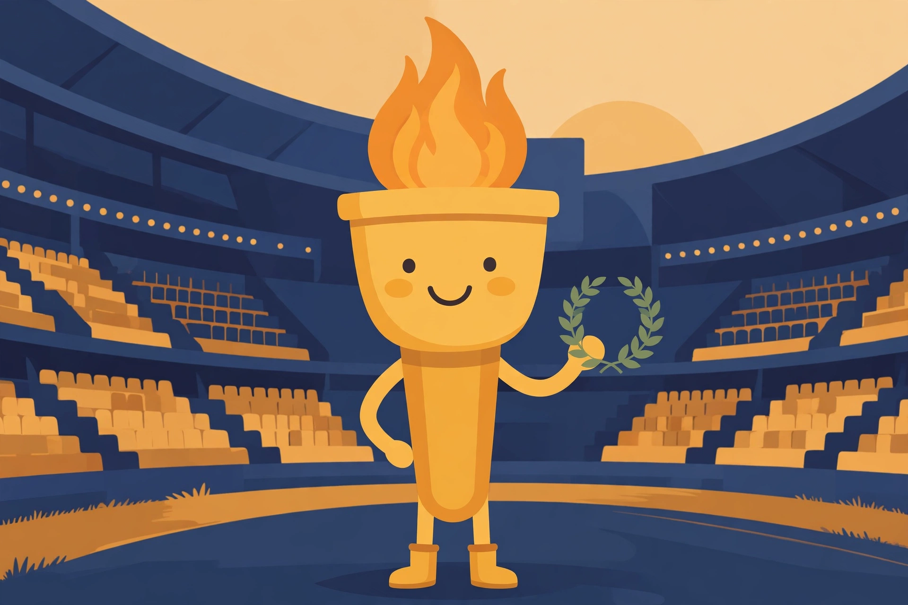

Welcome to the Battle Dome — where contenders meet, bouts are scored, and every result is reproducible.
Meet Tilly the Torch, the mascot of this world.

AI Olympics is the Signature Battle Dome: a tournament where 383 contenders face off in bouts across eight events, from Wrestling to Puzzle Hunt. The archive holds 38,063 bouts, each one deterministic and reproducible.
Two working tools, right here on the page. Each one says what it does and what it cannot do. Neither tool reaches the live web, and neither one needs a key.
Gold is worth 3 points, silver 2, bronze 1. Enter medal counts to get the points total.
Gold: Silver: Bronze:
Picks two leading contenders and an event, from a seed. The same seed always picks the same bout.
Seed:
Designs, printables, and demos — free, downloadable, usable on the page. Every product is labeled Signature or Fun. Nothing here is for sale.
A printable scorecard for scoring a bout at home: spaces for the two contenders, the event, and the gold, silver and bronze marks.
Making: print the printable file, cut along the lines, and score each bout 3 points for gold, 2 for silver, 1 for bronze.
A poster bracket for eight contenders, drawn in the Battle Dome style, for running a small tournament with friends.
Making: print the printable file, write in eight contender names from the archive, and fill in the winners round by round.
A set of trading cards for the leading contenders, with their medal counts on the back.
Making: print the printable file on card, cut out the cards, and trade them. Medal counts come from the archive medals file.
Download all product lines as a printable (text)
Tilly the Torch once refereed a bout between a cookbook and a garden. The cookbook won on points, the garden won on style, and the crowd went home happy. (Fun — a made-up tale, not a record.)